NumPy включает в себя набор пакетов для решения специализированных задач, например:
● numpy.linalg — реализует операции линейной алгебры (простое умножение векторов и матриц есть в базовом варианте);
● numpy.random — реализует функции для работы со случайными величинами;
● numpy.fft — реализует прямое и обратное преобразование Фурье.
Наиболее важные атрибуты объектов ndarray:
● ndarray.ndim - число измерений (чаще их называют "оси") массива.
● ndarray.shape - размеры массива, его форма. Это кортеж натуральных чисел, показывающий длину массива по каждой оси. Для матрицы из n строк и m столбов, shape будет (n,m). Число элементов кортежа shape равно ndim.
● ndarray.size - количество элементов массива. Очевидно, равно произведению всех элементов атрибута shape.
● ndarray.dtype - объект, описывающий тип элементов массива.
● ndarray.itemsize - размер каждого элемента массива в байтах.
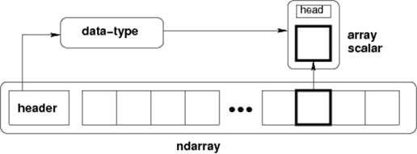
Концептуальная диаграмма, показывающая взаимосвязь между тремя фундаментальными объектами, используемыми для описания данных в массиве: 1) сам ndarray, 2) объект типа данных, описывающий структуру одного элемента массива фиксированного размера, 3) скалярный объект Python, который возвращается при доступе к одному элементу массива.
|
array - функция, создающая объект типа ndarray |
Основные типы данных dtype
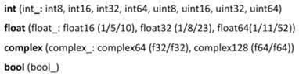
!!!! Если выходим за рамки диапазона типа, то исключение не вызывается (идет отсчет от правой границы):
print (np.uint8(-1)) #выведет 255, т.к. uint8 – беззнаковое число от 0 до 255
Генерация случайных чисел в новом стиле:
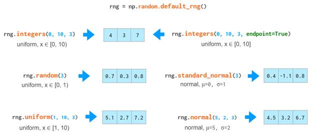
Инициализация матрицы:
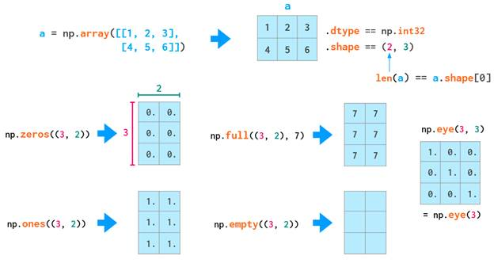
Срезы в двумерном массиве:
!!!! Обратите внимание, что при срезах:

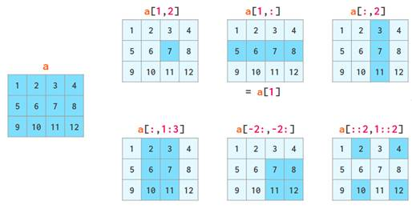
!!!! При нарезке массива на самом деле копирование не производится. Когда массив изменяется, изменения также отражаются в срезе.
Чтобы выбрать столбец из матрицы просто сделайте срез по всем строкам и укажите индекс нужного столбца:
M[:, 0] #выберет 0-й столбец
Математические операции между массивом и числом:
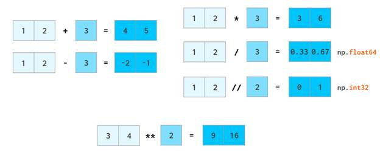
Арифметические операции с массивами одинаковых размеров
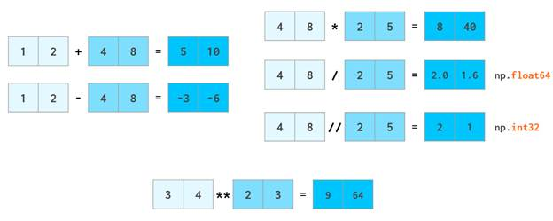
Арифметические операции над матрицами разных размеров возможны в том случае, если размерность одной из матриц равно одному (будет использоваться правила трансляции):
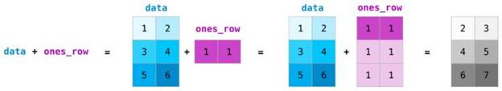
!!!! При несоответствии в размере выбрасываются ошибки:
>>> a = np.array([1,2,3], float)
>>> b = np.array([4,5], float)
>>> a + b
Traceback (most recent call last):
File "<stdin>", line 1, in <module>
ValueError: operands could not be broadcast together with shapes (3,) (2,)
Скалярное произведение - метод dot()
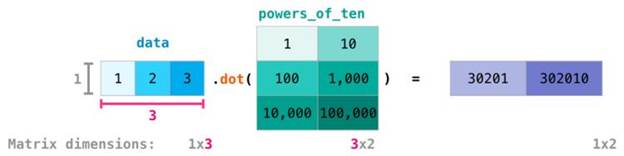
!!!! Размерности обеих матриц должны совпадать с той стороны, где они соприкасаются.
В NumPy всего три типа векторов: 1D-массивы, 2D-векторы-строки и 2D-векторы-столбцы. Вот диаграмма явных преобразований между ними:
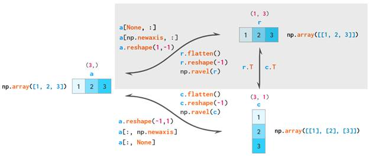
Flatten - это всегда копия, reshape (-1) - всегда вид, ravel - это вид, когда это возможно
!!!!! Одномерные массивы неявно интерпретируются как двухмерные векторы-строки, поэтому, как правило, нет необходимости преобразовывать между этими двумя - таким образом, соответствующая область заштрихована.
Функции агрегирования – это методы NumPy, позволяющие заменять данные интегральными характеристиками вдоль некоторых осей.
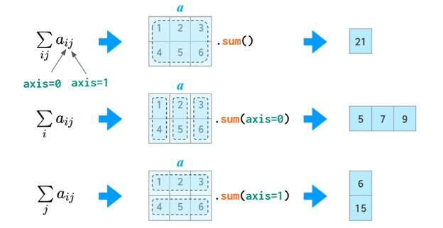
Первое измерение i (ось = 0) отвечает за индексацию строк, второе измерение j (ось =1) – за столбцы.
!!! Следует отметить, агрегирующие методы определены не только как методы модуля NumPy, но и для самих массивов:
np.функция(A, axes) эквивалентно A.функция (axes),
где под функцией подразумевается одна из функций-агрегаторов, а под axes — индексы осей.
Например: если а – это массив, то
|
a.sum() |
или |
np.sum(a) |
Объединение массивов
Несколько массивов могут быть объединены вместе вдоль разных осей с помощью функций hstack и vstack.
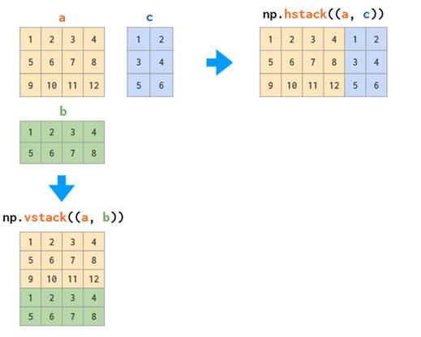
Объединение с одномерным массивом:
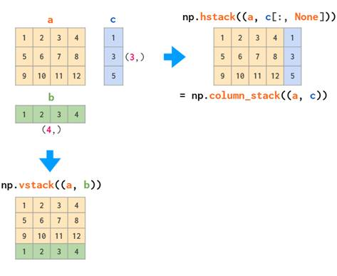
Разбиение массивов
Функция hsplit() - разбить массив вдоль горизонтальной оси, указав либо число возвращаемых массивов одинаковой формы, либо номера столбцов, после которых массив разбивается.
Функция vsplit() разбивает массив вдоль вертикальной оси, а array_split() позволяет указать оси, вдоль которых произойдет разбиение.
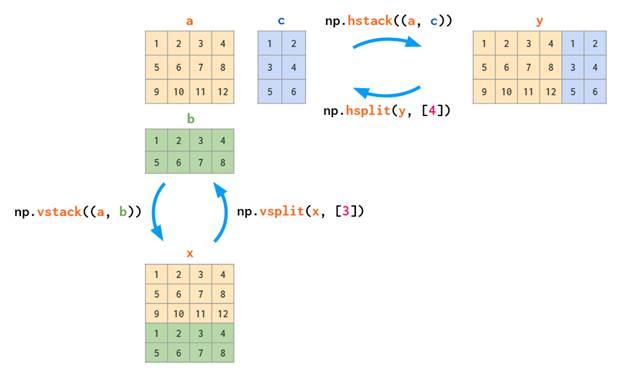
Трехмерный массив
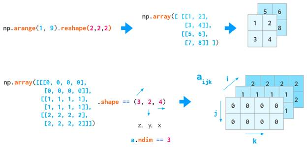
Порядок вывода n-мерного массива NumPy следующий — последняя ось зацикливается быстрее всего, а первая медленнее всего.
Это значит, что вывод np.ones((4,3,2)) будет иметь вид:
array([[[1., 1.],
[1., 1.],
[1., 1.]],
[[1., 1.],
[1., 1.],
[1., 1.]],
[[1., 1.],
[1., 1.],
[1., 1.]],
[[1., 1.],
[1., 1.],
[1., 1.]]])
Математика многочленов
NumPy предоставляет методы для работы с полиномами. Передавая список корней, можно получить коэффициенты уравнения:
Пример: массив возвращает коэффициенты, соответствующие уравнению: x4−11x3+9x2+11x−10.
>>> np.poly([-1, 1, 1, 10])
array([ 1, -11, 9, 11, -10])
Может быть произведена и обратная операция: передавая список коэффициентов, функция root вернет все корни многочлена.
Пример: дано уравнение x3+4x2−2x+3, найти корни
>>> np.roots([1, 4, -2, 3])
array([-4.57974010+0.j , 0.28987005+0.75566815j,
0.28987005-0.75566815j])
# Заметим, что в этом уравнении два корня мнимые
Подмодуль linalg
NumPy также предоставляет набор встроенных функций и методов для работы с линейной алгеброй. Это всё можно найти в подмодуле linalg.
Пример: найти определитель матрицы
>>> a = np.array([[4, 2, 0], [9, 3, 7], [1, 2, 1]], float)
>>> a
array([[ 4., 2., 0.],
[ 9., 3., 7.],
[ 1., 2., 1.]])
>>> np.linalg.det(a)
-48.